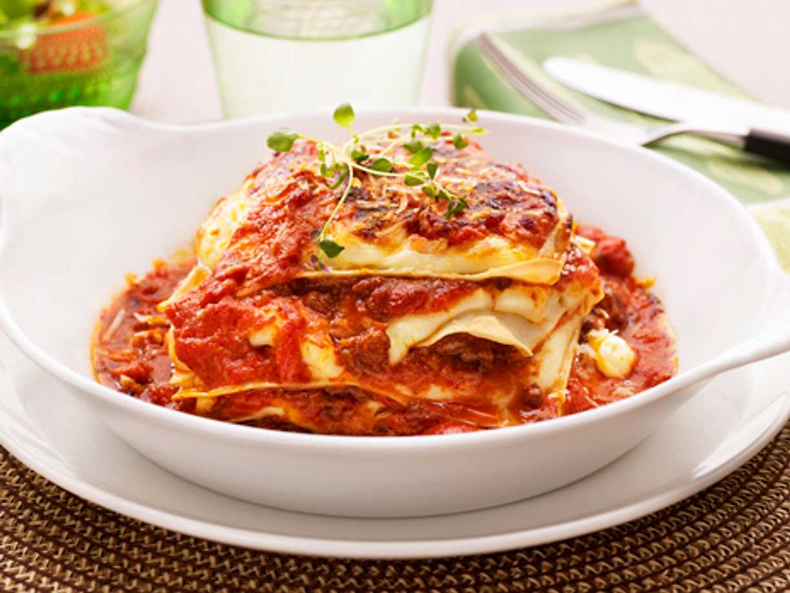

Lasagna Recipe

Description
Garfield's favourite.
This is a thicc lasagna. It is good to look at, and even better to eat.
Ingredients
- 400g pasta
- 400g pecorino sauce
- 400g minced meat
- 200g tomatoes
- 1 teaspoon of Love
Steps
- butter the form
- put pasta in the form
- put minced meat in the form
- put tomatoes and sauce into the form
- blend
- mix in some love
- boil for 90 minutes
- dispose of it
Home